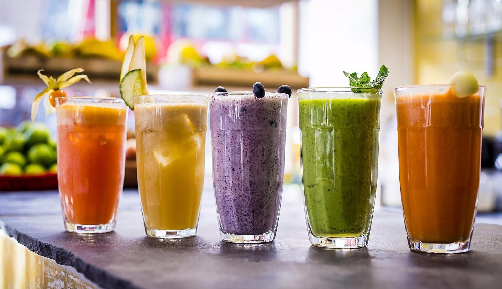

12 Healthy Smoothies to Start Your Day Off Right
Smoothies are a convenient and colorful way to start your day, but some recipes can be filled with added sugar and fat. For a healthy meal or snack, stick to the basics: fruit and veggies. Every successful smoothie contains two main ingredients: fruit and/or vegetables (often frozen) and a liquid, such as fruit juice, vegetable juice, or milk. Other possible ingredients include yogurt, nut butter, seeds, spices, herbs, and more. Many smoothies also include a few ice cubes to keep the mixture nice and cold. Often, recipes can be tweaked to meet different dietary requirements or tastes—feel free to swap out dairy products for non-dairy ones or change up the spices and juices. All of these smoothies recipes are loaded with good-for-you vitamins, minerals, antioxidants, fiber, and protein. They're made with only natural ingredients and range in flavors from mango to chocolate to veggie. You're sure to find a breakfast smoothie for every day of the week. All-natural, vegan, low-calorie, and raw, this superfood smoothie is nutritious and delicious. Antioxidant-rich blueberries and iron-rich spinach will start your day off right. This drink doesn't contain any sweeteners, but you can add a touch of honey or use fruit juice as the liquid if you like. Using a very ripe banana will naturally sweeten things up, too. You don't need fresh berries for a delicious strawberry smoothie—frozen will do just fine. Blended with a couple of fruit juices and yogurt, this simple concoction will be a hit with kids and adults alike. If you want to cut down on sugar, use plain yogurt instead of vanilla. Packed with protein and so creamy it's almost milkshake-like, this chocolate, peanut butter, and banana smoothie feels a treat. It also happens to be vegan. With peanut butter (swap for soy or cashew if that's what you have) and almond milk, it's a good after workout breakfast. Avocado adds magical creaminess to smoothies without the need for dairy. Full of healthy fat, this avocado and mango smoothie is just sweet enough thanks to a splash of orange juice. If you'd like your smoothie extra cold, add a scoop of ice to the blender.
Buy now!